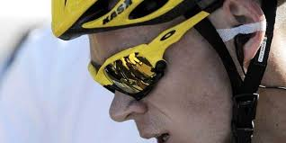
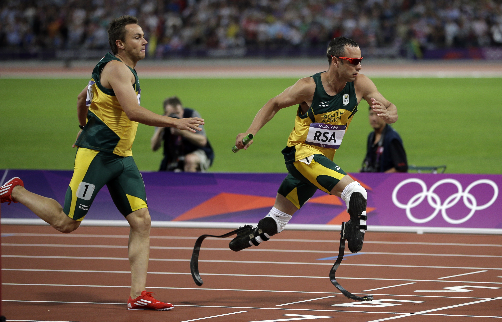

L'utilisation de la technologie dans le sport peut changer la manière de le pratiquer. Prenons par exemple le cyclisme. Dans les années 1980, celui qui allait gagnait l'étape était le plus fort. Pour caricaturer, il y avait des attaques sans cesse. Les écarts étaient peu fiables donc il fallait être à l'avant pour être sûr de ne pas se faire surprendre. Au bout d'un moment, les plus faibles lachaient et les plus forts se livraient bataille pour la victoire. Cependant, depuis la mise en place des oreillettes, ce n'est plus la même chose. Maintenant, les coureurs sont très à l'écoute de leur directeurs sportifs. Les courses sont beaucoup plus calculées. Les écarts entre le peloton et les échappés étant connus de manière très précise, il devient tout de suite plus facile pour un peloton d'accelérer au bon moment afin de reprendre les échappés entre 5 et 10 km de l'arrivée. Il ne leur reste plus qu'à rouler à forte allure pendant les kilomètres restants pour éviter la formation d'une nouvelle échappée et le sprint massif est assuré. Ce n'est plus vraiment le plus offensif qui gagne. C'est le plus malin. Ainsi, la manière de courrir n'est plus du tout la même entre les coureurs à l'instinct et les coureurs assistés par la technologie.
Christopher Froome a gagné 4 Tour de France. Souvent dans son style caractéristique en train de discuter avec Nicolas Portal, son directeur sportif via son oreillette
D'une manière générale, la technologie entre dans les sports. Que ce soit dans le sport lui-même comme vu ci-dessus ou dans la manière de l'arbitrer comme vu à la section "Arbitrage". La VAR dans le football, change la manière dont les joueurs vont se comporter. Par exemple, je ne serai pas surpris de voir une diminution des simulations dans la surface de réparation suite à la mise en place de ce dispositif. Dans le tennis, la forme des raquettes a changé. Cela a mené à des frappes plus rapides et donc un jeu différent de celui des années 80. Globalement la technologie rentre dans tous les sports. Ce n'est pas un problème en soit. C'est même souvent profitable au sport, au spectable. Il faut juste rester sur ses gardes que l'essence même du sport ne soit pas touchée. Tant que l'on garde l'esprit dans lequel le sport est pratiqué, la technologie a sa pace et est la bienvenue.
Du danger il peut y en avoir si la technologie est utilisée à mauvais escient. On retrouve cela souvent dans des cas de tricherie ou de dopage.
L'exemple le plus criant vient encore du vélo. Comme le montre cet article. Au début des années 2010, Fabian Cancellara alors grand maître des courses d'un jour et du contre-la-montre est pris dans la tourmente. Les pédales qu'il utilise sont un tout nouveau produit très optimisé qui ne présente aucun frottement. Mais était-ce bien légal ? Comme la loi n'anticipe pas la technologie, cette pratique a été traité à contre temps, donnant raison au coureur suisse. Mais cela a permis de mettre en lumière les problèmes liés au dopage technique : à partir de quel moment, une évolution technologique dans un sport dénature t-elle le sport ?
Car en effet, le dopage technique est très répendu dans le vélo. Le dernier cas en France remonte à 2017, où un jeune cycliste s'est fait prendre avec un mini-moteur caché dans son cadre. Cette forme de technologie allant à l'encontre totale de l'esprit de ce sport : c'est un cas de dopage technique. Cela répond en partie à la question posée par le précédent paragraphe. Une évolution est un dopage technique si elle va à l'encontre de l'esprit de ce sport.
Detection de moteur avec l'utilisation d'une caméra thermique
La technologie appelant souvent la technologie, il existe aujourd'hui des caméras thermiques permettant de detecter la présence de moteurs dans le cadre. Mais sans nul doute, le temps de créer cette technologie, une autre technologie de type dopage mécanique sera trouvée entre temps. Cette spirale technologique est donc parasite au sport lui-même. Elle ne le fait pas avancer dans le bon sens. Néanmoins, il faut savoir qu'elle existe et la traiter avec précaution, si l'on veut préserver un sport propore avec l'esprit qui doit le caractériser.
Un autre exemple permet de soulever d'autres questions par rapport à ce dopage technique. Il s'agit des athlètes handisport et notamment les sprinteurs (100m, 200m, 400m). Ils sont pour la plupart équipés de lames afin de remplacer leur jambes. Le problème intervient lorsque ces coureurs veulent courir avec les valides. Dans quelle meusure ces lames ne sont pas un dopage technique plus performantes que des mollets humains ? Il faut alors poser des normes technologiques bien précises sur ces lames pour ne pas risquer une génération d'athlètes cyborg. Alors que le message de base était plutôt un message d'intégration, nous nous retrouvons à poser des lois sur la limite du handicap comme possible dopage. Des solutions ont tout de même été trouvées et Oscar Pistorius a été le premier athlète équipé de lames à participer aux Jeux de Londres sur 400m.
Oscar Pistorius participant aux JO avec les valides